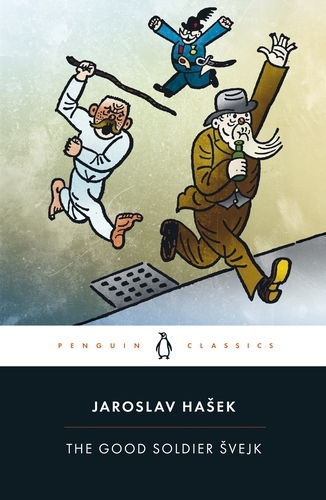

30:37 · 4 OPERE
Scene dalla grande democrazia inglese.
Il filo del discorso
Dr Divago commenta un filmato dell’intervento della polizia durante la campagna londinese di Brian Rose nel gennaio 2021. L’episodio, concluso con sanzioni per le restrizioni del lockdown, viene presentato dal relatore come segno di una distanza fra retorica democratica e uso effettivo della forza. Il commento segue il dialogo con gli agenti, insiste sui permessi per le riprese e domanda se candidati differenti siano trattati nello stesso modo. Le risposte degli operatori sono interpretate come rifiuto del confronto e imposizione di una versione dei fatti. Una digressione sulla detenzione delle armi, sui numeri delle stragi e sulla comunicazione sanitaria introduce la questione più ampia dell’assuefazione alle restrizioni. Il richiamo a Jean Améry serve a distinguere adattamento e resistenza intellettuale, con un’analogia storica che non può diventare equivalenza fra il caso londinese e Auschwitz. Il discorso passa anche alle elezioni statunitensi del 2020 e al problema di condividere criteri di verità prima di poter dialogare. Nel finale Hašek e Kafka sono evocati per il lato grottesco del potere, in particolare nella richiesta di identificazione a un candidato davanti al proprio autobus elettorale. La scheda mantiene la critica politica attribuita a Dr Divago e distingue la multa dall’arresto formalmente non verificato, le dichiarazioni dei partecipanti dagli atti istituzionali e il principio del confronto dalle conclusioni giuridiche non accertate.
I libri nel discorso

Intellettuale a Auschwitz
Identificazione probabile
Copertina: Bollati Boringhieri · Varianti · 2011 · traduzione di Enrico Ganni
Immagine autentica dell’opera, controllata visivamente; l’edizione di riferimento non è attribuita al filmato.
Jean Améry, esperienza intellettuale ad Auschwitz e difficoltà di adattarsi; titolo della raccolta non pronunciato, collegamento probabile.
Passaggio 12:30 ↗ · Fonti e libro ↗
Divina Commedia
Identificazione probabile
Copertina: Giunti Barbera · Passepartout, 2021 · edizione di riferimento
Inferno dantesco evocato come immagine di un estremo oltre il Lager, senza lettura o canto specifico.
Passaggio 13:04 ↗ · Fonti e libro ↗
1984
Identificazione probabile
Copertina: Newton Compton · edizione illustrativa
Corona 1984, allusione polemica al romanzo, senza lettura del testo.
Passaggio 18:22 ↗ · Fonti e libro ↗
Il buon soldato Švejk
Copertina: The Good Soldier Svejk, Penguin Classics, 28 aprile 2005, 784 pagine, traduzione inglese di Cecil Parrott, illustrazioni di Josef Lada, ISBN 9780140449914. Il buon soldato Švejk è il titolo italiano descrittivo del riferimento, non l’identificazione di una specifica traduzione usata nel filmato.
Copertina autentica Penguin: illustrazione di figure in movimento, uniforme e stampella, fascia bianca e nera con autore e titolo. Non è la copertina di una raccolta di racconti di Hašek né un ritratto generico del personaggio.
Hašek, autore del soldato Švejk, richiamato per la rappresentazione grottesca del potere.
Passaggio 27:36 ↗ · Fonti e libro ↗